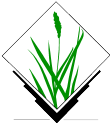
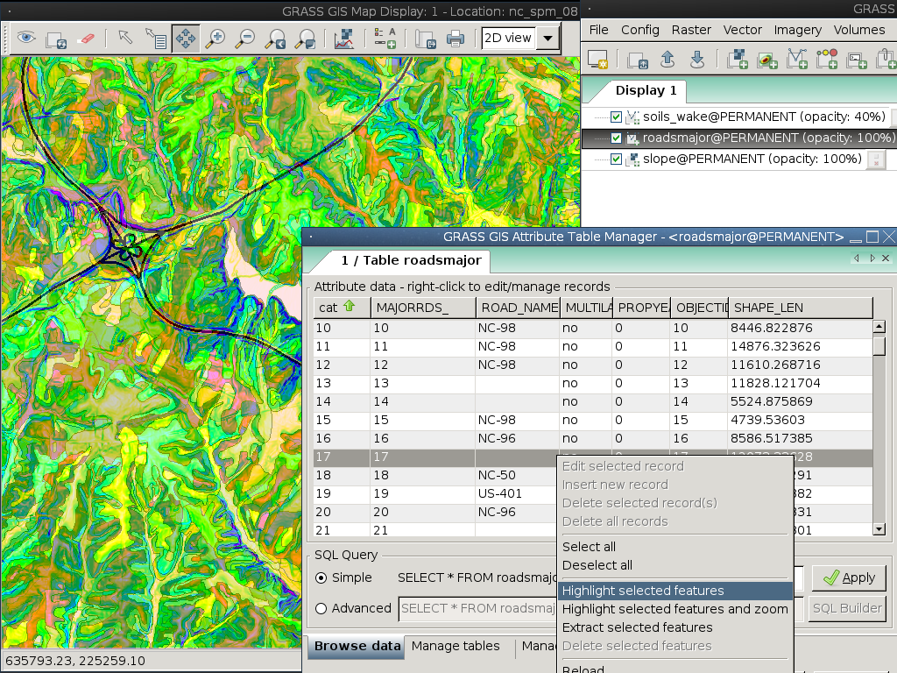

GRASS GIS¶
Teljesértékű GIS¶
A Geographic Resources Analysis Support System, amit általában GRASS-ként emlegettünk, egy térinformatikai rendszer (GIS), mely egy integrált szoftver környezetben biztosít hatékony raszter, vektor és térinformatikai feldolgozó motort. A GRASS GIS térinformatikai modellező, raszter és vektor megjelenítő, térinformatikai adatkezelő és elemző valamint űr és légifényképeket feldolgozó eszközöket tartalmaz. Fejlett idősorokat feldolgozó keretrendszert tartalmaz és egy Python API-t a gyors térinformatikai programozáshoz. A GRASS GIS-t a feldolgozási sebességre és nagy térinformatikai adatrendszerek elemzésére optimalizálták. Alkalmas kifinomult prezentációk és nyomtatott térképek előállítására is. A GRASS GIS-t sok nyelvre lefordították és az adatformátumok óriási halmazát képes kezelni.
A GRASS GIS-t mindenfelé használják a világon, akadémiai és kereskedelmi környezetben mint ahogy kormányhivatalokban és környezetvédelmi konzultációs cégeknél is. Futtatható a népszerű hardver platformok széles körén és egy szabad, nyílt forráskódú szoftver, a GNU General Public License feltételei mellett.
A GRASS GIS program több mint 400 beépített elemző modult tartalmaz. Továbbá több mint 100, a közösség által készített modul és eszköztár érhető el szabadon az „Add-on” tárházból. 30 év folyamatos fejlesztés után a GRASS GIS a legrégebbi és a legnagyobb nyílt forráskódú GIS. Könnyen készíthetünk benne szkripteket és elég sokoldalú ahhoz, hogy kötegelt adatfeldolgozásra használjuk erős párhuzamos feldogozásra alkalmas szuperszámítógépeken vagy mint egy kézreálló asztali térinformatikai programot a kézben tartott PDA-hoz vagy netbookokhoz.


Alapfunkciók¶
Ha meg tudja nevezni talál hozzá egy eszközt.
Fedezze fel a képernyőkép gyűjteményt.
Részletek¶
Honlap: https://grass.osgeo.org/
Licenc: GNU General Public License (GPL) version 2+
Szoftver verzió: 8.2.1
Támogatott platformok: GNU/Linux, Mac OSX, MS Windows
API interfészek: C, Python, Bourne Shell
Támogatás: https://grass.osgeo.org/about/community/